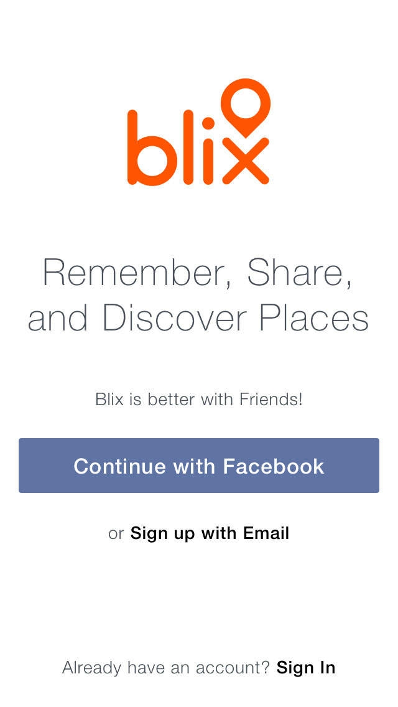
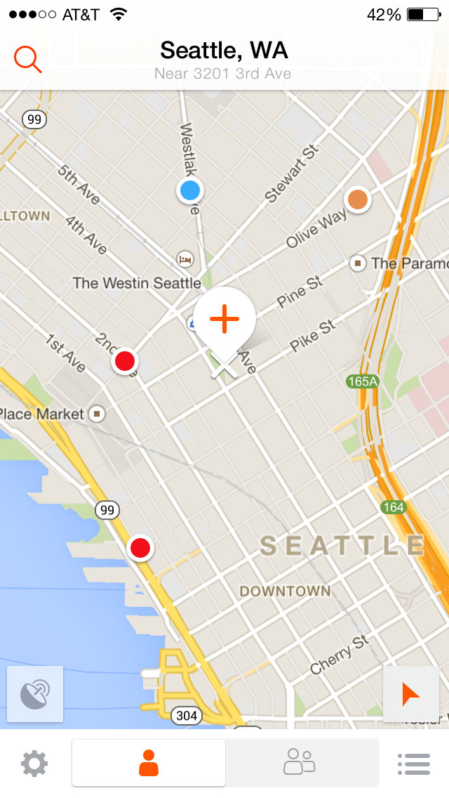
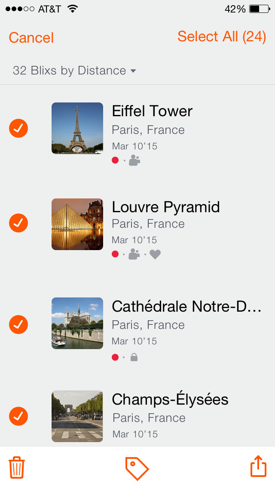
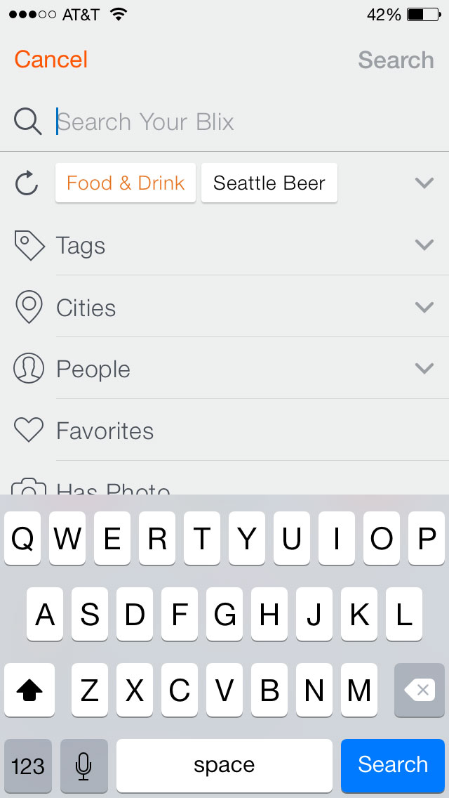
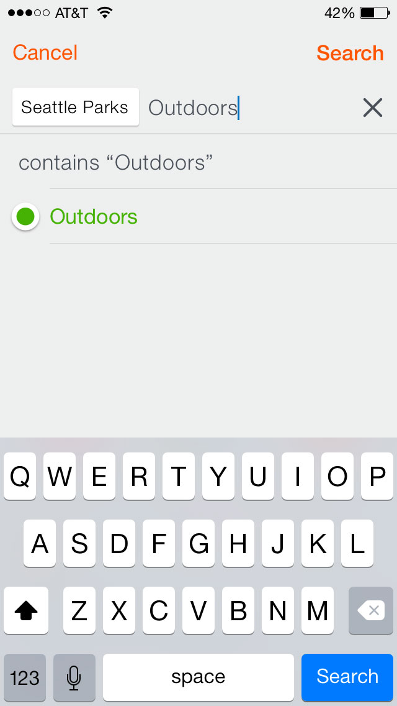

Blix is an iPhone app to help you remember and share your favorite places. I worked with the team to rethink and redesign an existing prototype into a more usable and nicer looking iPhone app. Later, I designed a logo, a website, and several prototypes for a future desktop version of the app.
While the initial design work for the iPhone app was wrapping up, we started thinking about how Blix might scale up to bigger screens, and I built an html prototype to help visualize this exploration.